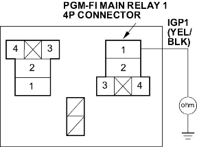
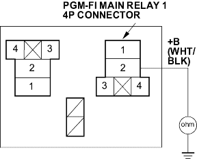

- Disconnect each of the components or the connectors below, one at a time and check for continuity between the PGM-FI main relay 1 4P connector terminal No. 1 and body ground.
- PGM-FI main relay 2
- ECM/PCM connector A (31P)
- Each injector 2P connector
- Idle air control (IAC) valve 3P connector
- Top dead centre (TDC) sensor 2P connector
- Crankshaft position (CKP) sensor 3P connector

Wire side of female terminals
Is there continuity?
YES - Go to step 16.
NO - Replace the item that made continuity to body ground go away when disconnected. If the item is the ECM/PCM, substitute a known-good ECM/PCM and recheck. If symptom/indication goes away, replace the original ECM/PCM.
Also replace the No. 6 ECU (ECM/PCM) (15 A) fuse. 
- Disconnect the connectors of all following items.
- PGM-FI main relay 2
- ECM/PCM connector A (31P)
- Injectors
- Idle air control (IAC) valve
- Top dead centre (TDC) sensor
- Crankshaft position (CKP) sensor
- Check for continuity between the PGM-FI main relay 1 4P connector terminal No. 2 and body ground.

Wire side of female terminals
Is there continuity?
YES - Repair short in the wire between the PGM-FI main relay 1 and each item. Also replace the No. 6 ECU (ECM/PCM) (15A) fuse.
NO - Replace the PGM-FI main relay 1. Also replace the No 6 ECU (ECM/PCM) (15A) fuse.
- Inspect the No. 17 FUEL PUMP (15A) fuse in the under-dash fuse/relay box.
Is the fuse OK?
YES - Go to step 30.
NO - Go to step 19.
- Remove the blown No. 17 FUEL PUMP (15A) fuse in the under-dash fuse/relay box.
- Disconnect ECM/PCM connector E (31P).